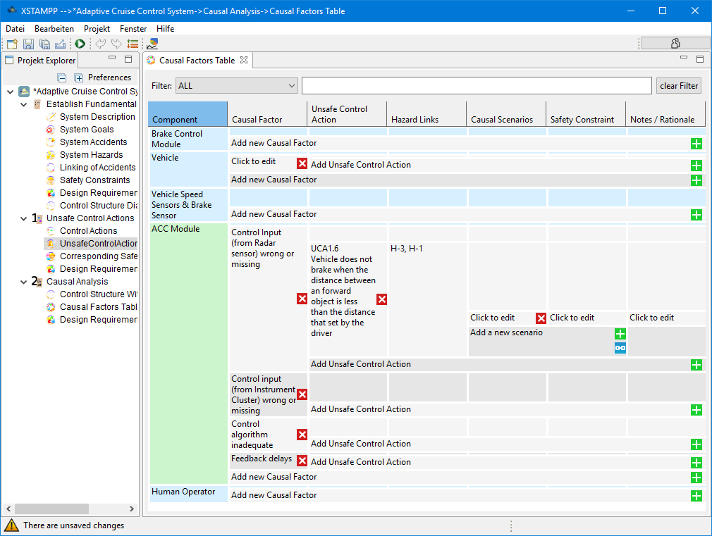

Control Structure with Process Model ←
Causal Factors Table
→ Design Reqirements of Step 2
There are two way of analysing the
causal factors
leading to the unsafe control actions:
Using Scenarios to define critical situations
Defining safety constraints directly for each hazard
Using Scenarios
Classic approach
